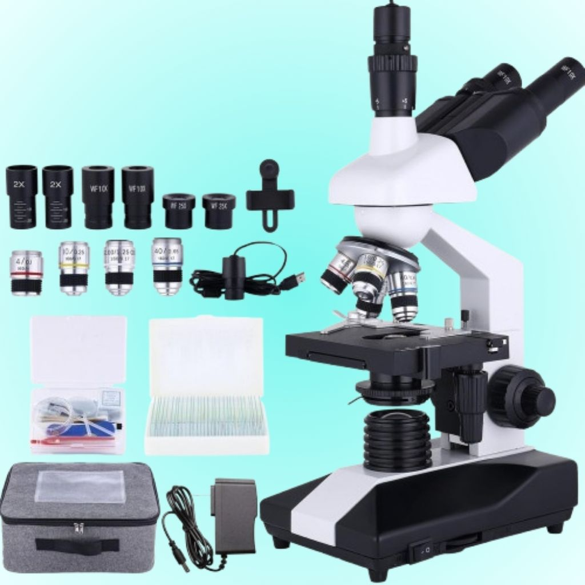

Cómo elegir un microscopio de laboratorio
Guía completa para seleccionar el microscopio adecuado según el tipo de análisis.
Ver másArtículos, guías y novedades sobre productos de laboratorio

Guía completa para seleccionar el microscopio adecuado según el tipo de análisis.
Ver más
Conoce las principales normas de seguridad para manipular reactivos químicos.
Ver más
Descubre los equipos indispensables para laboratorios industriales y académicos.
Ver más
Explicación de los principales reactivos utilizados en laboratorios químicos.
Ver más